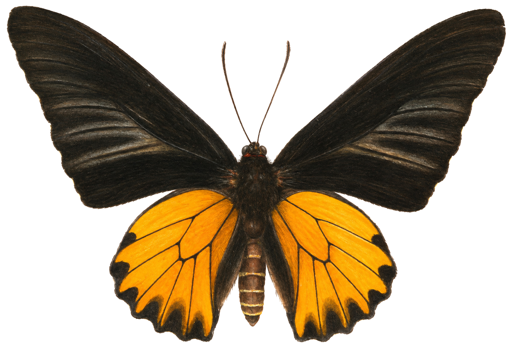

Papilionidae · 013 / 165
গোল্ডেন বার্ডউইং
Troides aeacus

বৈশিষ্ট্য ও শনাক্তকরণ
বড় প্রজাতি; সামনের ডানা কালো, পেছনের ডানা উজ্জ্বল হলুদ। হলুদ অংশের কালো দাগে স্ত্রী-পুরুষের পার্থক্য আছে।
স্ত্রী ও পুরুষের পার্থক্য
পুরুষের পেছনের ডানায় সোনালি অংশ চওড়া; স্ত্রীর হলুদ অংশে কালো দাগ বেশি।
আকার
ডানা মেলে বিস্তার ১১০–১৫০ মিমি; চীনের শেননংজিয়া জাতীয় উদ্যানের প্রজাতিবিবরণ অনুযায়ী। শুধু ওকিনাওয়ার নমুনার পরিমাপ নয়।
ওকিনাওয়ার দ্বীপে রেকর্ড
স্থানীয় সূত্রে উল্লিখিত দ্বীপের রেকর্ড নিচের সূত্রে দেখুন। প্রাদেশিক রেকর্ড হাতেরুমা দ্বীপের। ১৯৯৫ সালের প্রথম রেকর্ড এবং পরবর্তী প্রজনন ও পালনসংক্রান্ত তথ্য আছে।
আবাসস্থল
দ্বীপের রেকর্ড আবাস-তালিকায় দেখুন। ওকিনাওয়ায় দীর্ঘমেয়াদি আবাস-পছন্দের বিস্তারিত নিশ্চিত হয়নি।
জীবনযাপন ও অতিরিক্ত তথ্য
এটিকে বর্তমানে সমগ্র ওকিনাওয়ায় প্রতিষ্ঠিত সাধারণ প্রজাতি বলা হয়নি। T. helena-এর মতো অন্য বার্ডউইংয়ের সঙ্গে গুলিয়ে ফেলবেন না।
শূককীট ও খাদ্য উদ্ভিদ
Aristolochia লতা খাদ্য। স্থানীয় খাদ্যগাছের পুরোনো শনাক্তকরণ পরে সংশোধিত হয়েছে।
তথ্যসূত্র ও সহায়ক পাঠ
- 沖縄蝶類生態図鑑：キシタアゲハ
ডেটায় উল্লেখিত সূত্র দেখার তারিখ: 2026-11-10 - 日本の蝶：アゲハチョウ科（雌雄差）
ডেটায় উল্লেখিত সূত্র দেখার তারিখ: 2026-11-10 - 香川大学：キシタアゲハ亜属（雌雄形態）
ডেটায় উল্লেখিত সূত্র দেখার তারিখ: 2026-11-10 - 神農架国家公園：Troides aeacus
ডেটায় উল্লেখিত সূত্র দেখার তারিখ: 2026-11-10
তথ্য সরবরাহকৃত ডেটার উপর ভিত্তি করে তৈরি (হালনাগাদ: ১০ নভেম্বর ২০২৬)। কোনো দ্বীপের রেকর্ড সেখানে বর্তমান স্থায়ী বসবাস বা সহজে দেখা পাওয়ার নিশ্চয়তা নয়। চিত্র নির্দেশক; শনাক্তকরণে বাস্তব নমুনা ও সূত্র মিলিয়ে দেখুন।